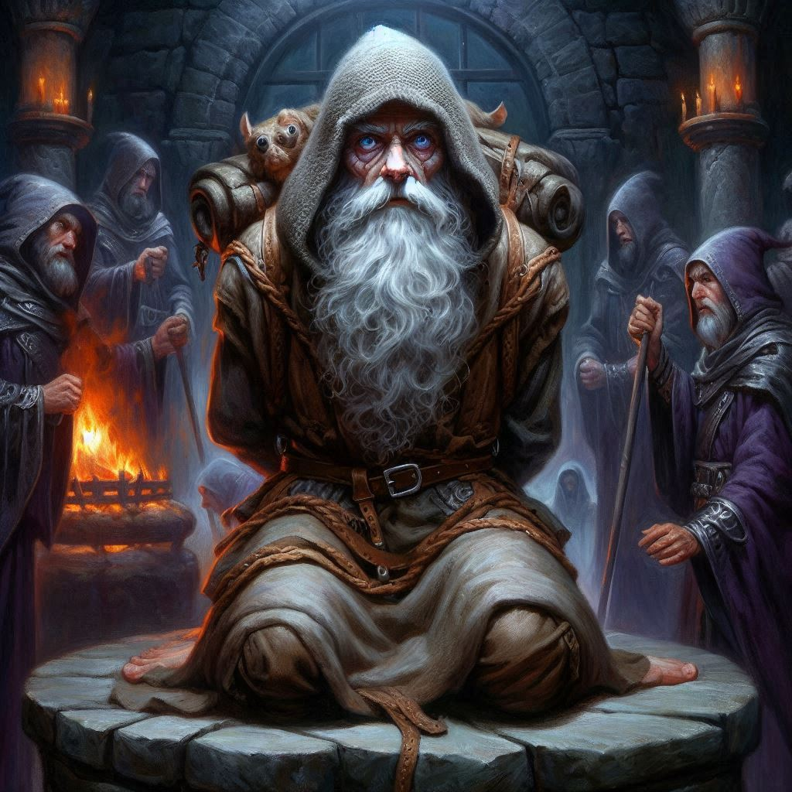
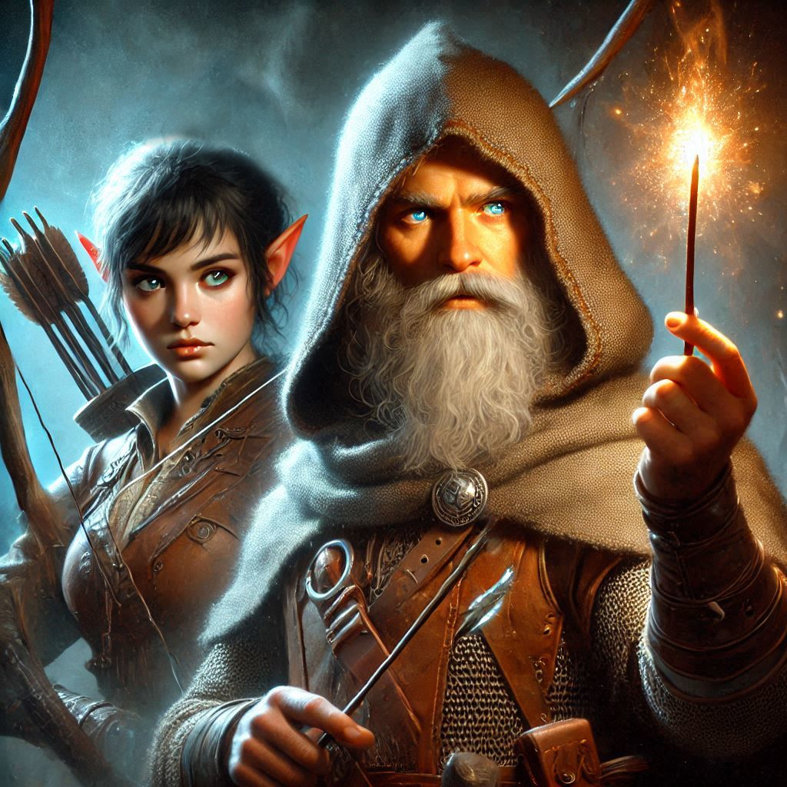

The Altar of Yaldaboath
The air grows thick with tension as you, Kira, Baider, and Elias crouch low in the shadows of the ancient stone passageway. Shamurel leads the way, his small form flitting silently between the twisted roots and cracked walls of the secret entrance to Umbra'Thal, the dark elves' capital. Your heart races, every sound amplified in the oppressive silence, as you grip the magical rune stone tightly, a reminder of the power you’ve gained and the danger that still looms ahead.
Shamurel stops abruptly, holding up a hand, signaling for silence. You peer around him, catching glimpses of the intricately carved walls illuminated by eerie blue crystals embedded in the stone. Their glow reveals murals of dark elven warriors, fierce and unyielding, their faces twisted in expressions of malice.
“Keep close,” Shamurel whispers, his voice barely above a breath. “The guards are always alert, especially when sacrifices are imminent.”
You nod, exchanging a glance with Baider and Elias. The stakes couldn’t be higher. Onyx’s life hangs in the balance, and the thought of Varis and his dark magic sends a shiver down your spine. You’ve come too far to turn back now.
As you follow Shamurel deeper into the palace, the winding passage opens up into a larger chamber. Shadows flicker in the corners, and you catch sight of a group of dark elves patrolling, their sharp features illuminated by the faint glow of the crystals.
“Down this way,” Shamurel urges, darting to the side of the room. You and your companions press on behind him, taking care to remain unseen. You navigate through the gloom, heart pounding in your ears, until you arrive at the Chamber of Portals.
A massive stone arch looms before you, the air crackling with latent energy. On the other side, you can see the outline of a raised altar surrounded by dark, pulsating runes. And there, bound and helpless, is Onyx, his face twisted in pain, as Varis stands over him, preparing for the ritual.
“We have to act now!” Elias whispers fiercely, fists clenched. You nod, adrenaline surging as you assess your options.
Before you can move, Shamurel tugs at your sleeve. “You’ll need my help,” he says urgently. “I know how to disable the guards and distract Varis. But you need to promise to free my kin if we make it out of here.”
You hesitate for a moment, thoughts racing. The goblins have suffered greatly at the hands of the dark elves, and you know that their freedom means just as much as saving Onyx.
With resolve, you nod. “We’ll help your kin. We promise.”
“Good,” Shamurel replies, a glint of determination in his eyes. “Follow my lead, and stay close.”
With a deep breath, you prepare to charge into the fray. You see the guards still milling about the chamber, unaware of your presence.
“Ready?” Shamurel asks, and you nod, gripping your weapons tight.
At his signal, Shamurel launches a small, shimmering stone toward the far wall. It explodes in a burst of light and sound, drawing the attention of the guards. They turn, weapons drawn, to investigate the noise.
Now’s your chance.
“Go!” you shout, rushing forward with Baider and Elias at your side. The three of you sprint toward the altar, where Onyx is bound, oblivious to the chaos around you.
You can hear Varis’s voice rising above the din, cursing as he realizes what is happening. “Stop them!” he roars, fury coloring his words.
In an instant, Baider pushes past you, launching himself at Varis, who wields a dark scepter glowing with power. The clash echoes in the chamber as you and Elias reach Onyx, who looks up at you with a mix of relief and fear.
“Free me!” he urges, desperation lacing his tone. You quickly assess the bindings, and with a flick of your dagger, you cut through the ropes holding him captive.
As he stands, ready to fight alongside you, the chamber erupts into chaos. Dark elves rush to protect their master, and the air fills with the clash of steel and the crackle of dark magic.
“We must help Jorsh open the portal!” Onyx exclaims, pulling out a wand adorned with glowing runes.
“Open the portal?” you shriek. “Help Jorsh?” Has Onyx lost his mind? What is he thinking?
“Lass,” Onyx says, locking eyes with you, “Yaldaboath is coming. There is only one who can stop him.”
“Who can stop Yaldaboath?” you ask, feeling a shiver of fear travel up your spine. You hope beyond all hope that Onyx is not speaking of you.
“Don’ worry, young ranger,” Onyx says with a wink. “You are not the sacrifice. But you must help Jorsh. He will not be able to close the portal without you.”
You have no idea what Onyx is talking about. You hear Baider growl and whirl around to see him locked in mortal combat with Varis.
“We need to help Baider!” Elias cries as he notches an arrow and dispatches one of the dark elves closing in on the three of you.
A group of dark elf clerics rush your location, lunging at you with blades held high. You send one of the clerics to the floor with an arrow between his eyes.
Shamurel appears behind another dark elf and cuts through the evil cleric with a malevolent dagger. “Hey, you promised to help me free my family! Now is our chance!”